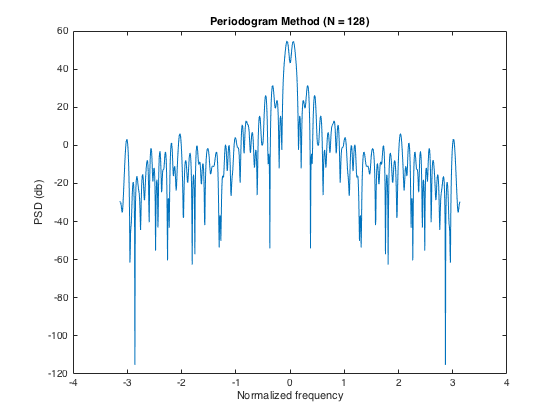
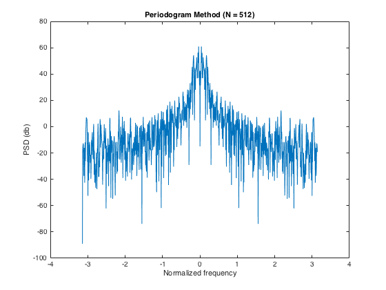
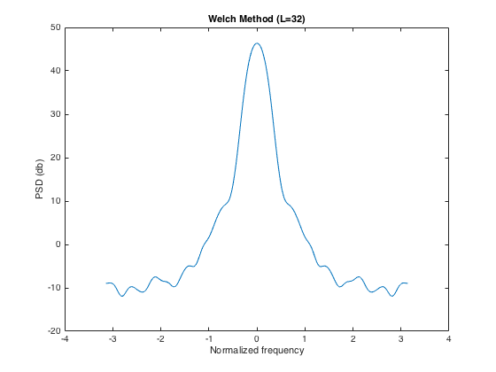
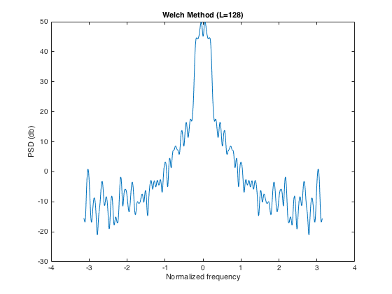
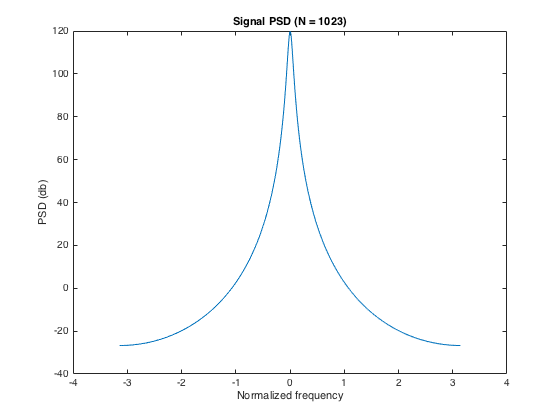
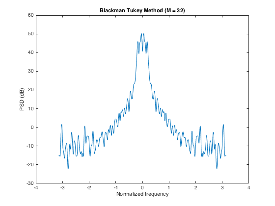
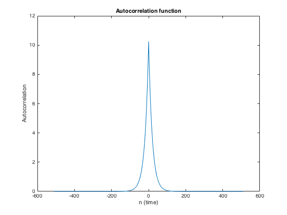
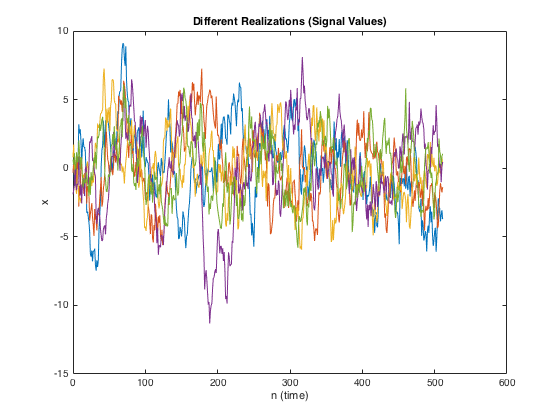
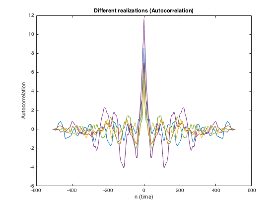

Contents
EE779 : Advanced Topics in Signal Processing
Please refer to relevant comments throughout the file
Navjot Singh (130110071)
close all clear all % Reading the input data (file S01.DAT stored in same folder) data = getdata('./S01.DAT'); % * Some comments to get started * % * fftshift is employed to shift zero frequency to the center of spectrum % * usually, PSDs are shown in a dB scale, and so is done here % * normalized frequency from -pi to pi is shown % * function finAutocov is provided as a separate file
Periodogram Estimate of PSD
fft_len = 1024; freq = linspace(-pi,pi,fft_len); % range of frequency to plot N= 128; x=data(1:N); a=fftshift(fft(x,fft_len)); a=((abs(a)).^2)./N; per_PSD_128=a; fig = figure; plot(freq,10*log(per_PSD_128)) title('Periodogram Method (N = 128)'); xlabel('Normalized frequency'); ylabel('PSD (db)'); saveas(fig,'./results/per_PSD_128.jpg','jpg'); N= 512; x=data(1:N); a=fftshift(fft(x,fft_len)); a=((abs(a)).^2)./N; per_PSD_512=a; fig = figure; plot(freq,10*log(per_PSD_512)) ; title('Periodogram Method (N = 512)'); xlabel('Normalized frequency'); ylabel('PSD (db)'); saveas(fig,'./results/per_PSD_512.jpg','jpg'); % *Periodogram Method Comments* % As N is increased the resolution (ability to resolve closely spaced % frequency components) is improved. % The variance of the periodogram remains constant irrespective of N. % For lower value of N, PSD estimate is smoother. 
Welch Method for PSD
fft_len=1024; N=512; freq = linspace(-pi,pi,fft_len); L=32; % length of each periodogram D=L/2; % overlap length w= bartlett(L); U=sum(abs(w).^2)/L; K = floor(N/(L-D))-1; % Denotes number of periodograms welch_PSD_32 = zeros(1,fft_len); for i=1:K t=((i-1)*(L-D)+1); % some variable to index a=data(t:t+L-1).*w'; % windowing a=fftshift(fft(a,fft_len)); a=abs(a).^2; welch_PSD_32=welch_PSD_32+a; % taking sum of periodogram estimates end welch_PSD_32=welch_PSD_32/(K*L*U); % normalizing fig = figure; plot(freq,10*log(welch_PSD_32)); title('Welch Method (L=32)'); xlabel('Normalized frequency'); ylabel('PSD (db)'); saveas(fig,'./results/welch_PSD_32.jpg','jpg'); L=128; D=L/2; w= bartlett(L); U=sum(abs(w).^2)/L; K = floor(N/(L-D))-1; welch_PSD_128 = zeros(1,fft_len); for i=1:K t=((i-1)*(L-D)+1); a=data(t:t+L-1).*w'; a=fftshift(fft(a,fft_len)); a=abs(a).^2; welch_PSD_128=welch_PSD_128+a; end welch_PSD_128=welch_PSD_128/(K*L*U); fig = figure; plot(freq,10*log(welch_PSD_128)); title('Welch Method (L=128)'); xlabel('Normalized frequency'); ylabel('PSD (db)'); saveas(fig,'./results/welch_PSD_128.jpg','jpg'); % *Welch Method Comments* % * As L is increased the resolution (ability to resolve closely spaced % frequency components) is improved. % * Variance is less for higher values of K (lower values of L). % * Plot for L = 32 is smoother compared that of L=128. % * This depicts the trade-off between resolution and % variance for the same method with different parameters. 
Blackman Tukey Method for PSD
N = 512; fft_len=1024; rx = findAutocov(data); % calling function to return autocovariance seq freq = linspace(-pi,pi,fft_len); M=32; r=[fliplr(rx(1:M)),rx(2:M)]; % reproducing a symmetric autocov seq w=bartlett(2*M-1); a=r.*w'; blacktukey_PSD_32=abs(fftshift(fft(a,fft_len))); fig = figure; plot(freq,10*log(blacktukey_PSD_32)); title('Blackman Tukey Method (M = 32)'); xlabel('Normalized frequency'); ylabel('PSD (dB)') saveas(fig,'./results/blacktukey_PSD_32.jpg','jpg'); M=128; r=[fliplr(rx(1:M)),rx(2:M)]; w=bartlett(2*M-1); a=r.*w'; blacktukey_PSD_32=abs(fftshift(fft(a,fft_len))); fig = figure; plot(freq,10*log(blacktukey_PSD_32)); title('Blackman Tukey Method (M = 32)'); xlabel('Normalized frequency'); ylabel('PSD (dB)') saveas(fig,'./results/blacktukey_PSD_32.jpg','jpg'); % *Blackman Tukey Method Comments* % * As M is increased the resolution (ability to resolve closely spaced % frequency components) is improved. % * Variance is less for higher values of K (lower values of M for the same % amount of overlap). % * Plot for M = 32 is smoother compared that of M=128. % * Depicts the trade-off between resolution and % variance for the same method with different parameters. 
Actual PSD (given Autocorrelation sequence)
fft_len = 1024; sigma_o = 1; % given constants rho = 0.95; freq = linspace(-pi,pi,fft_len); r=zeros(1,(fft_len/2)-1); for i=1:(fft_len/2)-1 r(i)=rho^i; end r=[fliplr(r),1,r]; r=r.*((sigma_o^2)/(1-rho^2)); % obtained symmetric autocov sequence signal_PSD = abs(fftshift(fft(r,fft_len))).^2; % *Actual PSD and Autocorrelation plots* % Following plots are for the autocorrelation function given in Q2 fig = figure; plot(freq,10*log(signal_PSD)); title('Signal PSD (N = 1023)'); xlabel('Normalized frequency'); ylabel('PSD (db)') saveas(fig,'./results/actual_PSD.jpg','jpg'); fig = figure; t = [-((fft_len/2)-1):((fft_len/2)-1)]; plot(t,r); title('Autocorrelation function'); xlabel('n (time)'); ylabel('Autocorrelation') saveas(fig,'./results/actual_autocor.jpg','jpg');
Comparing different methods
Spectral estimation methods can be compared on the basis of trade-off between variance and resolution. Also changing parameters of the same method changes estimated spectrum (such parameters dependancies are mentioned above in comments section of above work). In terms of variance Periodogram method performs worst. More number of blocks for estimation reduces variance but shorter blocks imply resolution will be poorer. In case of Welch method, overlaping allows more number of blocks of given length, hence it outperforms periodogram and normal Bartlett (nonoverlapping) method. Blackman Tukey reduces variance by smoothening out the variations of the underlined single periodogram. On an average Blackman Tukey peroforms better than Welch and Periodogram due to low variance and better resolution.
Different realizations
Realizations of the same process are obtained by using difference equation so formed by given filter when white gaussian noise is given as an input to it.
fig1 = figure; fig2 = figure; rho = 0.95; len = 512; for itter = 1:5 % We compute 5 realizations of the signal power_db = 0; v = wgn(len,1,power_db); % white gaussian noise of unit variance y = zeros(len,1); y(1) = v(1); % as process if assumed to be causal and x(0)=0 % Implementing difference equation (As per given filter) for i = 2:len y(i) = v(i) + rho*y(i-1); end y = y - mean(y); % Make y zero mean r = findAutocov(y'); r=[fliplr(r),r(2:end)]; % make symmetric autocov seq figure(fig1); t = [0:length(y)-1]; plot(t,y); title('Different Realizations (Signal Values)'); ylabel('x'); xlabel('n (time)'); hold on; figure(fig2); t = [-(length(r)-1)/2:(length(r)-1)/2]; plot(t,r); title('Different realizations (Autocorrelation)'); ylabel('Autocorrelation'); xlabel('n (time)'); hold on; end saveas(fig1,'./results/realizations_signal.jpg','jpg'); saveas(fig2,'./results/realizations_autocor.jpg','jpg'); 